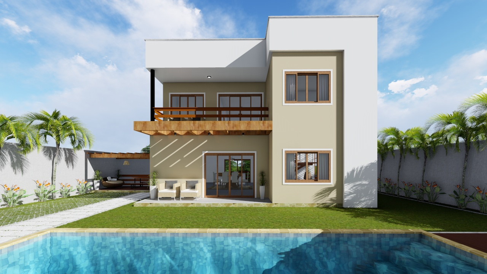
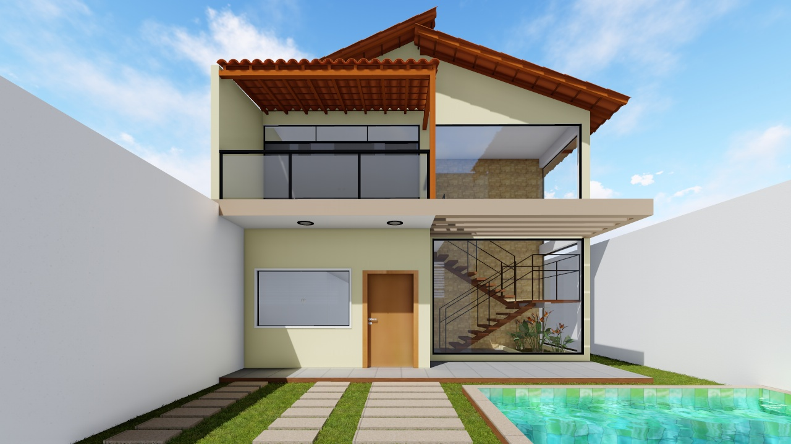
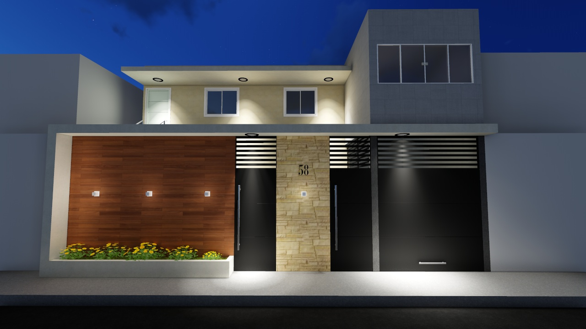

| Instagram | Tour Virtual 360° | Fale Conosco | |
GS ARQUITETURATransformando sonhos em realidade! |
Nossa históriaSomos um escritório de Arquitetura fundado em 2018, liderado pelo Arquiteto Gustavo Santiago, formado em Arquitetura e Urbanismo pela UniRuy Wyden e Mestre Acadêmico em Urbanismo pelo Programa de Pós graduação em Arquitetura e Urbanismo da Universidade Federal da Bahia. Desenvolvemos projetos arquitetônicos voltados para construções e reformas residenciais; realização de cadastro para regularização de imóveis e consultorias de construção. |
Serviços:
|
|
ProjetosResidencial DórisResidencial GilvaniResidencial Vieira |
|
Todos os direitos reservados |
|